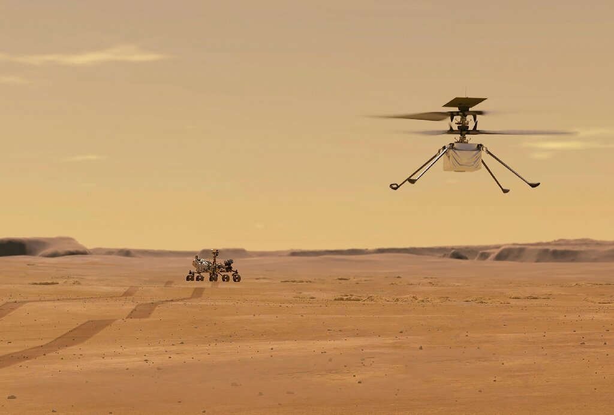
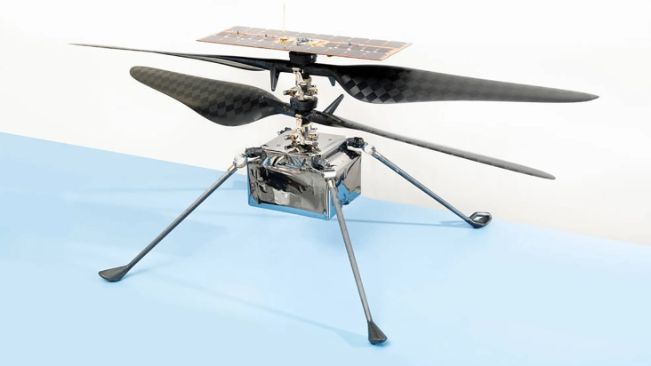
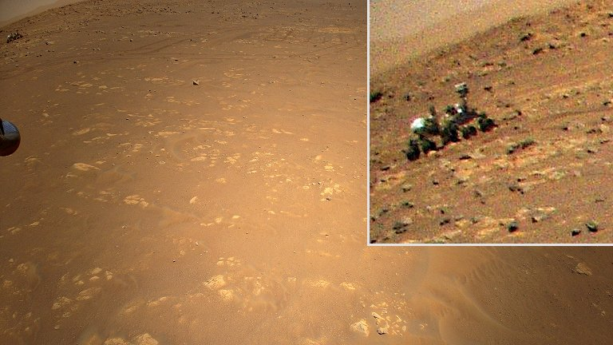

Helicoptéro em marte voa pela primeira vez! o pequeno helicoptéro do Rover Perseverence da NASA voa pela primeira vez e o resultado foi um susseso! com o helicoptéro de 1,8Kg voou na superfice marciana cerca de 3 metros da durante 45 segundos, um marco e tanto para a exploração espacial e para a área da tecnologia aéroespacial.
Helicoptéro Ingenuity
O helicoptéro foi levado pelo Rover da NASA Persevrence que pousou em marte em 2020. Com a principal missão do ingenuity sendo um texte para saber se era possível voar em outro planeta. Esse experimento é muito importante para o futuro da exploração espacial apesar de parecer fácil colocar algo suspenso no ar aqui na terra, em outro planeta é muito complicado como diversos fatores como: densidade atmosferica, gravidade, peso e etc... Com os dados da terra é fácil caucular a tragetória e velocidade de algo, porém em outro planeta essas regras variam um pouco. Sendo esse o motivo da alegria de todos que trabalharam 6 ano nesse projeto, pois é a primeira vez que o ser humano consegue voar em outro planeta.
Engenuity em voo
O Helicoptéro Engenuity possue um sistema de navegação de ultima geração que analisa a superfice do planeta enquanto está em voo e automaticamente faz uma analise do terreno escolhendo o melhor lugar para pousar que não tenha inclinações ou relevo.
Foto tirada do Rover Perseverence em Marte pelo Ingenuity